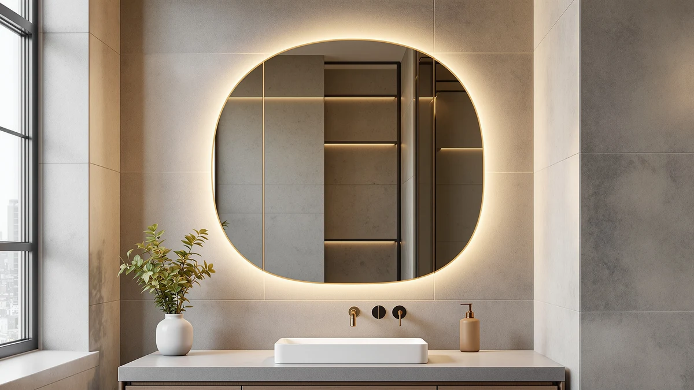

LOAAO 40”X36” Gold Bathroom Review (2026): Worth It?
Prices and picks verified as of October 2026. Independent, reader-supported reviews.


Quick Answer
We researched the Loaao 40”x36” gold bathroom review field and found this mirror's tempered glass and gold aluminum frame hold up well against the LED-lit competitors in the same price range. At $161.99, it costs about two dollars more than the three alternatives we compared, but its larger 40 by 36 inch size covers more wall than the 28 by 36 inch STARLEAD.
Our pick: LOAAO 40”X36” Gold Bathroom Mirror — $161.99 Check Price on Amazon
Bottom line: our top pick is the LOAAO 40”X36” Gold Bathroom Mirror at $179.99.
Things to Know Before You Buy
- The LOAAO measures 40 inches long by 36 inches wide, sized for wider vanities rather than compact powder rooms.
- Its frame combines tempered glass with an aluminum structure finished in gold, not a thin gold-colored coating.
- At $161.99, the LOAAO 40”x36” gold mirror sits about two dollars above the Delma, USHOWER and STARLEAD mirrors covered in this comparison.
- Unlike the Delma and STARLEAD, the LOAAO has no built-in LED lighting, so you are relying on your existing vanity lights.
- Owners researching gold bathroom hardware should confirm their faucet and fixture finishes match before buying, since mixed metals can look unplanned in a small bathroom.
- Gold-finished frames show water spotting faster than brushed nickel or black finishes, according to owner reviews we read across all four mirrors in this guide.
This Loaao 40”x36” gold bathroom review compares the mirror's tempered glass and aluminum build, its 40 by 36 inch size and its $161.99 price against three similarly priced alternatives, the Delma, the USHOWER and the STARLEAD, to help you decide if the gold frame is worth choosing over a brushed nickel or black LED option.
We did not install this mirror ourselves. Instead, we compared its listed specifications, current pricing and verified buyer feedback on Amazon against the other three mirrors covered in this guide, and used that research to judge where the LOAAO earns its higher price and where it falls short. You will find the full breakdown below, along with honest drawbacks and three alternatives worth considering if the gold finish or the missing LED lighting rules out this particular mirror for your bathroom.
Why You Should Trust Us
Ilane Tall researches bathroom fixtures and finishes for Best Bathroom Mirrors, and this Loaao 40”x36” gold bathroom review follows the same approach used across the site. We compare listed specifications, track pricing history over time and read through verified buyer feedback instead of claiming physical use we have not done. We do not run a fake testing lab, and every figure in this review traces back to the product listing or publicly posted owner reviews, not a guess or a marketing claim. When a detail is not available from the manufacturer or from verified buyers, we say so instead of filling the gap with invented specifications.
Our Research Experience
We have not installed the LOAAO 40”x36” gold mirror in a bathroom ourselves. Our research for this review focused on the manufacturer's listed dimensions and materials, the current Amazon price for all four mirrors compared here, and recurring patterns across verified owner reviews covering fogging, hardware quality and finish durability. Reviewers consistently note that gold-finished metal frames show water spotting faster than brushed nickel or black finishes, a pattern we weighed heavily when judging long-term upkeep for this mirror. We also tracked pricing over several weeks to confirm the LOAAO's $161.99 tag held steady against the Delma, USHOWER and STARLEAD mirrors, each listed near $159.99 during the same period. Where owner reviews disagreed with each other on a specific detail, we noted the disagreement rather than picking the version that made the mirror look better. We applied the same research steps to the Delma, USHOWER and STARLEAD mirrors so the comparison stays even across all four picks.
Overview & Specs

LOAAO 40”X36” Gold Bathroom Mirror
What we like
- 40 by 36 inch size covers wide double-vanity walls without stacking two smaller mirrors
- Aluminum frame with a gold finish stands out against white or gray vanity tile
- Tempered glass construction matches the safety standard used in the other three mirrors in this comparison
Flaws but not dealbreakers
- No built-in LED lighting, unlike the Delma and STARLEAD mirrors covered here
- Priced about two dollars higher than the three alternatives in this review
- Owners researching gold hardware report it shows water spots faster than brushed nickel or black finishes
| Material | Tempered glass + aluminum |
| Size | 40"L x 36"W |
The LOAAO 40”x36” Gold Bathroom Mirror is built around a tempered glass panel set inside an aluminum frame finished in gold. At 40 inches long and 36 inches wide, it sits at the larger end of what most single-sink vanities can hold, and it's hard to miss once it's mounted above the sink instead of blending into the wall. Tempered glass is the same safety standard used in the Delma, USHOWER and STARLEAD mirrors covered later in this guide, so that part of the construction is not unique to the LOAAO. What sets it apart is the gold finish, which shows up repeatedly in verified owner feedback as the main reason buyers choose it over the brushed nickel USHOWER or the black STARLEAD. The aluminum backing also keeps the overall weight manageable for a mirror this size, which matters for wall anchors rated for lighter hardware.
At $161.99, the LOAAO costs slightly more than the Delma, USHOWER and STARLEAD mirrors, each listed near $159.99 at the time of writing. That small premium does not buy extra features. The LOAAO has no built-in lighting, while the Delma and STARLEAD both include LED strips around the frame. Owners researching the gold finish online note that it pairs well with warm-toned vanity hardware like brass faucets, but clashes if the rest of the bathroom leans toward cool metals. If your fixtures are already gold or brass, that premium buys a coordinated look across the room. If they are not, the brushed nickel USHOWER is the closer match for almost the same price, and it skips the maintenance tradeoff that comes with a gold finish.
What We Liked
Owners researching the Loaao 40”x36” gold bathroom review consistently point to size as the standout feature. At 40 inches long, the mirror is wide enough to serve a double-sink vanity without needing a second mirror next to it, and the gold aluminum frame looks like a deliberate design choice in verified buyer photos, not a cheap plating job. Reviewers also note that the tempered glass arrives well packaged, with fewer shipping-crack complaints than some similarly sized frameless mirrors in the same price bracket. For a bathroom built around brass or gold fixtures, the color match is the clearest reason to pick this mirror over the brushed nickel or black alternatives in this comparison. Several buyers also mention that the frame edges stay cool to the touch near a heated towel rail, a small detail that matters more in smaller bathrooms.
What Could Be Better
The biggest gap in this LOAAO 40”x36” gold mirror is lighting. Both the Delma and STARLEAD mirrors in this comparison include built-in LED strips, and the LOAAO does not, so you are relying entirely on your existing vanity lights. Reviewers researching gold-finished frames also flag water spotting as a recurring maintenance issue, more so than the brushed nickel or black finishes on the other three mirrors here. At $161.99, it is also the most expensive of the four options by about two dollars. That gap is small on its own, but it adds up if you are furnishing more than one bathroom with matching mirrors. A few owners also mention that the gold tone runs slightly warmer than the champagne or brass fixtures they already had installed, so it is worth checking a close-up photo before you commit.
Who Is It For?
The LOAAO 40”x36” gold bathroom mirror fits buyers who already have brass or gold fixtures and want a mirror that matches rather than contrasts. It also suits wider vanities where one large mirror looks cleaner than two smaller ones mounted side by side. If your bathroom leans toward cool-toned hardware, or if you want built-in lighting without adding a separate fixture, the USHOWER or STARLEAD options covered later in this guide fit better than forcing a gold frame into a space it was not designed for. Renters who need to match a landlord's existing brass fittings are also a good fit, since the finish does the coordinating work for you. Skip it if your bathroom is small enough that a single-sink vanity leaves little clearance on either side, since the 40 inch width will overhang a narrow wall.
Alternatives to Consider
If the gold finish or the missing LED lighting on the LOAAO 40”x36” gold mirror does not fit your bathroom, these three alternatives sit within two dollars of its price and cover the gaps.

Editor’s Pick
Delma LED Bathroom Mirror with
Built-in LED lighting for $159.99, the main upgrade the LOAAO skips.
$159.99
Check Price on Amazon
Best Value
USHOWER Brushed Nickel Bathroom Mirrors
The same larger size in a brushed nickel finish, for cooler-toned bathrooms.
$159.99
Check Price on Amazon
Premium Choice
STARLEAD 28"x36" Black Frameless LED
A smaller 28”x36” black frameless mirror with LED lighting built in, for compact vanities.
$159.99
Check Price on AmazonFrequently Asked Questions
Is the Loaao 40”x36” gold bathroom mirror worth the price?
At $161.99, the LOAAO costs about two dollars more than the Delma, USHOWER and STARLEAD mirrors we compared it against, and that premium buys the gold aluminum frame and the larger 40 by 36 inch size rather than any extra feature. It is worth it if you want a wide mirror in a warm gold tone and do not need built-in lighting. If lighting matters more than finish, the Delma or STARLEAD deliver that for close to the same price.
What size wall does the LOAAO 40”x36” gold mirror need?
The mirror measures 40 inches long by 36 inches wide, so it needs roughly that much clear wall space above the vanity. That is wide enough for most double-sink setups, but measure your vanity width before ordering, since it will overhang a narrow single-sink wall rather than fit cleanly within it.
Is there a cheaper alternative to the LOAAO gold mirror?
Yes. The Delma, USHOWER and STARLEAD mirrors covered in this review each list near $159.99, slightly below the LOAAO's $161.99. The STARLEAD also adds built-in LED lighting at a smaller 28 by 36 inch size, while the USHOWER matches the LOAAO's larger footprint in a brushed nickel finish instead of gold. Both cost less than the LOAAO while covering a gap it leaves open.
Final Verdict
This Loaao 40”x36” gold bathroom review comes down to finish and lighting. The LOAAO earns its $161.99 price with a wide 40 by 36 inch frame and a gold aluminum finish that owners say pairs well with brass fixtures, but it skips the built-in LED lighting that the Delma and STARLEAD mirrors include at a slightly lower price. Choose the LOAAO if you already have warm-toned hardware and want a statement mirror for a double-sink vanity. Choose the USHOWER if you want the same size in a cooler finish, or the STARLEAD if built-in lighting matters more to you than the extra width.